nano4M is trained on four modalities — RGB, depth, surface normals, and text scene descriptions — all flowing through the same any-to-any masked objective.
So we asked a narrow, testable question: can we bolt on a sparse, structural modality drawn from a classical computer-vision algorithm — Canny edge maps — without touching the architecture at all? No new attention blocks, no new heads. Just a new stream of discrete tokens and one extra line in the modality list.
If the answer is yes, the 4M recipe is even more general than it looks: any algorithm that turns an image into a grid you can tokenize becomes a first-class citizen the model can read from and write to.
02 The Pipeline
From raw pixels to edge tokens
Every Canny map is produced offline and stored as a (10, 256) array — ten augmentations, 256 tokens each — sitting alongside the existing RGB, depth and normal tokens so the model never knows the difference.
Reuse the dataset's crop_settings so edges align pixel-for-pixel with RGB / depth / normals.
STEP 3
Dual-channel Canny
Luminance 30/100OR HSV-saturation 20/80, merged with bitwise-OR.
STEP 4
DiVAE tokenizer
4M edge tokenizer → 16×16 grid, vocab 8192.
Figure 1. The complete Canny modality pipeline. Nothing downstream of Step 4 was modified.
Why raw images, not decoded tokens?
The obvious shortcut — decode the existing RGB tokens back to pixels and run Canny on those — fails quietly. The RGB tokenizer is lossy, and Canny amplifies exactly the compression artifacts it leaves behind: blocky contours, phantom edges, smeared boundaries. Working from the original pixels keeps lines crisp and, because we reuse the same crop settings, guarantees the edge map lands on the same grid as every other modality.
input
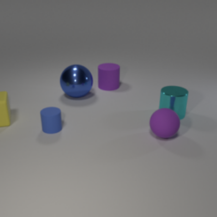
Raw RGB 512px → crop
cannyCanny edges dual-channel
round-trip
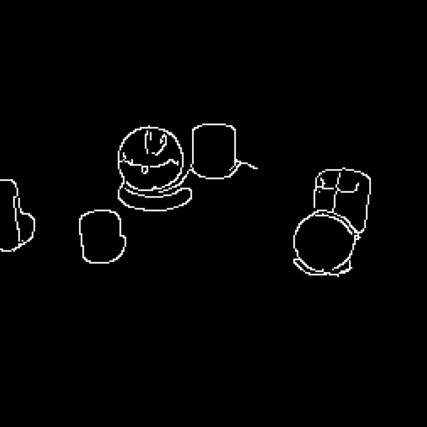
Token round-trip 256 tokens, decoded
Encoding then decoding the 256 edge tokens preserves the object contours almost exactly — the tokenizer is a faithful container for sparse line art.
Picking the input resolution
Canny is resolution-sensitive: run it too small and edges fuse into blobs, too large and you drown in texture noise. We swept seven input resolutions, mapped every result back to 256×256, and tracked edge density. We settled on 256px at ~1.6% edge pixels — dense enough to describe structure, sparse enough to tokenize cleanly.
rgb
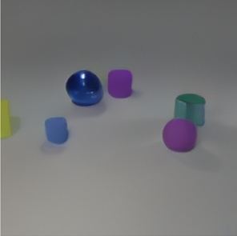
RGB input
64px
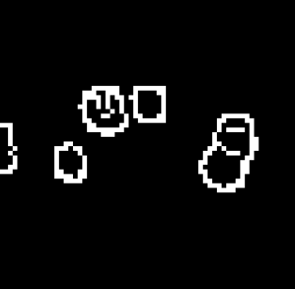
4.8% — blobs
128px
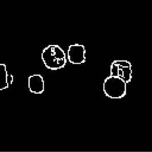
2.8%
256px ✓
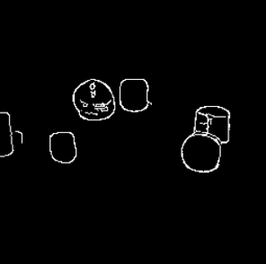
1.6% — chosen
192px
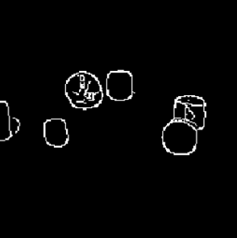
2.1%
320px
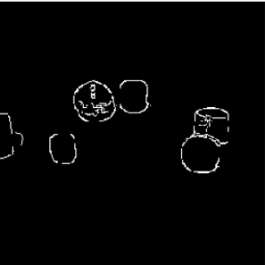
1.3%
384px
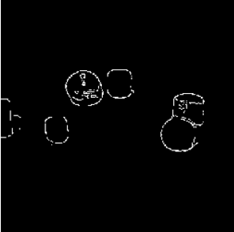
1.0%
480px
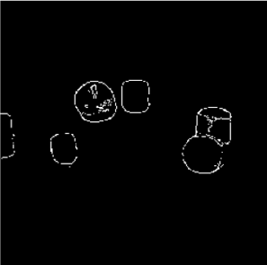
1.0% — sparse
Figure 2. Edge density falls monotonically from 4.8% (64px) to 1.0% (480px). 256px sits at the knee of the curve.
03 What the Model Can Do
One new stream, six new conversions
Because every modality is just tokens in the shared masked objective, adding edges instantly unlocks every direction in and out of the new stream — generation and inversion alike, all from the same 92M-parameter checkpoint.
RGB →Canny
The model recovers the classical algorithm it was distilled from.
in
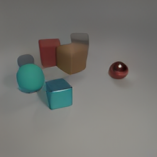
RGB in
gt
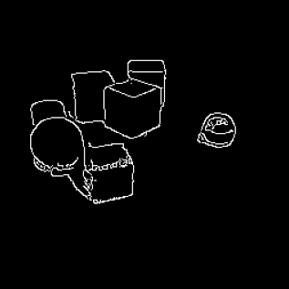
Canny GT
gen
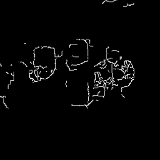
generated
Canny→RGB
Structure in, appearance out — colour and material are hallucinated to fit the contours.
inCanny in
gen
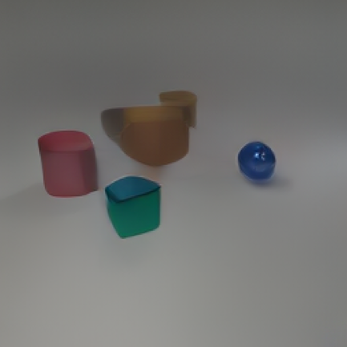
RGB out
gtRGB GT
Canny→Depth
Edges carry enough geometry to place objects in depth.
in
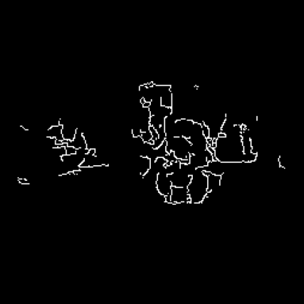
Canny in
gen
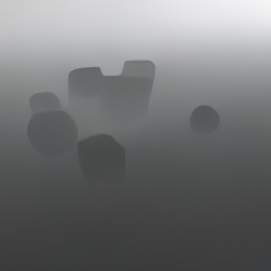
depth out
Canny→Normals
Surface orientation reconstructed from line drawings alone.
inCanny in
gen
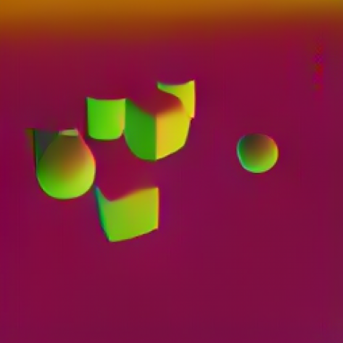
normals out
Canny+ scene→RGB
Text fixes the colours that edges leave ambiguous.
inCanny + text
genRGB out
gtRGB GT
All modalities→RGB
More conditioning → sharper, better-grounded scenes.
cannycanny only
+scene
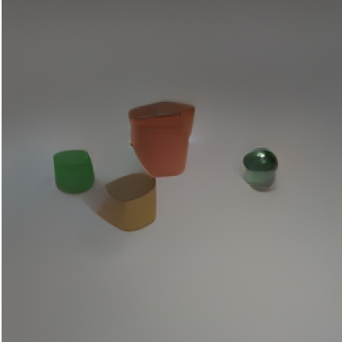
+ scene
+all
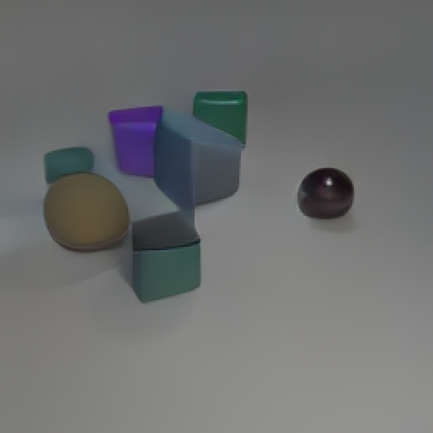
+ depth + normals
By the numbers
0
Canny→RGB FID ↓
0
RGB→Canny F1 ODS ↑
0
Canny→Depth AbsRel ↓
0°
Canny→Normals Angular err. ↓
Evaluated on 100 held-out validation scenes. Decoding parameters tuned per direction (see §05).
04 Chained Generation
Thinking through structure first
Because each generated modality can be fed back as context for the next, we can build multi-step pipelines where the model commits to shape before appearance. From a text scene description alone it first imagines the edge map, then paints RGB onto that scaffold.
Figure 3.scene_desc → Canny → RGB. The intermediate edge map is a real, inspectable artifact — the model's structural "rough sketch" before it commits to colour.
What this buys us
The intermediate edge map is fully inspectable, so a failure is diagnosable: you can see whether the model got the layout wrong (bad edges) or the appearance wrong (good edges, bad paint). On CLEVR, chaining through edges produces RGB quality on par with direct text→RGB — the win is interpretability, not raw FID.
05 Creative Demos
Going off-script
The interesting question isn't whether the model handles real Canny maps — it's what happens when we feed it edge maps it could never have seen in training: hand-drawn wireframes, synthetic primitives, sliding contours. The RGB stream follows along anyway.
edge_translation.mp4RGB FOLLOWS EDGES
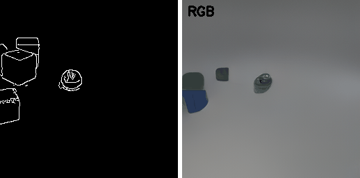
A single real Canny map is translated ±90px across the frame; for every shift the model re-paints a fresh RGB scene. The objects slide with their edges — appearance is locked to structure.
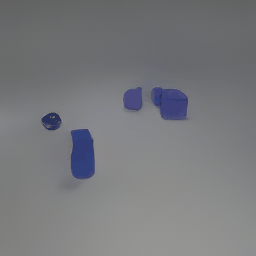
Rotating wireframe → RGB
A programmatic 3D cube wireframe is rendered at 18 angles, tokenized as Canny, and turned into objects. The model has never seen a wireframe — yet it fills each pose.
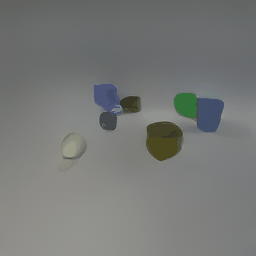
Edge sliding
Translating the Canny map horizontally drags the whole generated scene with it — a clean demonstration that the RGB output is genuinely conditioned on edge position.
06 The Numbers
More context, better pictures
The headline quantitative result is a clean conditioning ablation: stacking modalities monotonically improves Canny→RGB generation. Edges give you structure; text and geometry give you everything edges throw away.
Conditioning
FID quality
FID ↓
Canny only
68.55
Canny + scene
66.87
Canny + depth + normals + scene
50.26
Key result
Going from edges alone to full multi-modal conditioning is a 27% FID improvement (68.55 → 50.26) — with zero retraining. The same checkpoint just listens to more of what it's given.
Why edges need 4× more decoding steps
Generation direction matters for sampling. Painting into RGB is easy; the model fills a dense canvas confidently. Generating edges is harder — the target is mostly empty space, so the model needs far more refinement steps to decide which sparse patches should light up.
Direction
steps
temp
top-p
top-k
X → RGB / Depth / Normals
16
0.3
0.95
10
X → Canny (sparse)
64
0.5
0.9
0
Sparse, mostly-empty edge grids need 4× the ROAR refinement steps of dense RGB targets.
07 What Didn't Work
Two honest post-mortems
Both of these were good ideas that died for concrete, instructive reasons. We're keeping them in the record because the reasons point straight at our roadmap.
✕ Abandoned · format mismatch
Colour-metadata tokens
Edges throw away colour. So we tried prepending 40 metadata tokens — 10 objects × [x, y, colour, shape] — in front of the 256 edge tokens, giving the model a structured colour palette for free. The round-trip was flawless: positions, shapes and colours all decoded back perfectly.
rgbRGB
canny
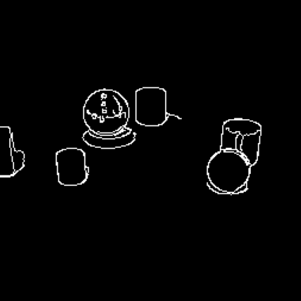
Canny
meta
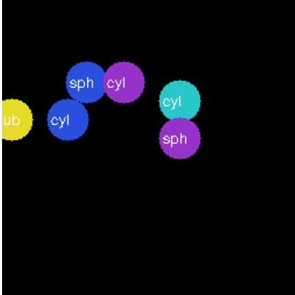
decoded meta
reconedge recon
Why it died: 40 + 256 = 296 tokens, but nano4M assumes a fixed 256-token length per modality. Supporting 296 would have meant variable-length masking or wasteful padding across every modality — too invasive for a "no architecture changes" project.
✕ Abandoned · compute budget
SAM-guided edges
CLEVR Canny maps carry shadow gradients and background texture as noise. The fix: run SAM to segment objects first, then apply Canny inside each instance mask — clean, object-aware contours with the background suppressed entirely.
rgb
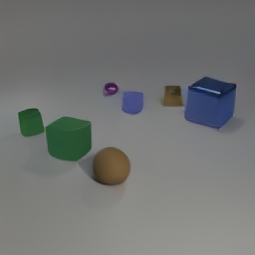
RGB
sam
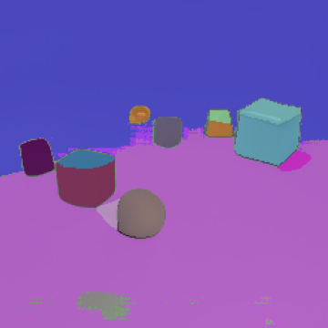
SAM masks
canny
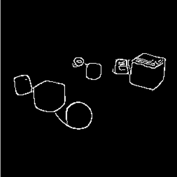
plain Canny
clean
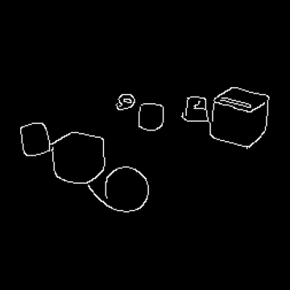
SAM → Canny
Why it died: 60k samples × 10 augmentations = 600k SAM forward passes on a ViT-H backbone. We pre-tokenized only ~1.6k samples before it was clear this would never finish on our GPU budget.
08 What's Next
Failures become directions
Each dead end above has a natural sequel. The roadmap is mostly about removing the two constraints that stopped us — compute and the fixed token length.
Faster segmentation ← SAM post-mortem
Revisit object-aware edges with SAM 2 or FastSAM — orders of magnitude cheaper, which makes 600k forward passes tractable.
 Canny edges
Canny edges